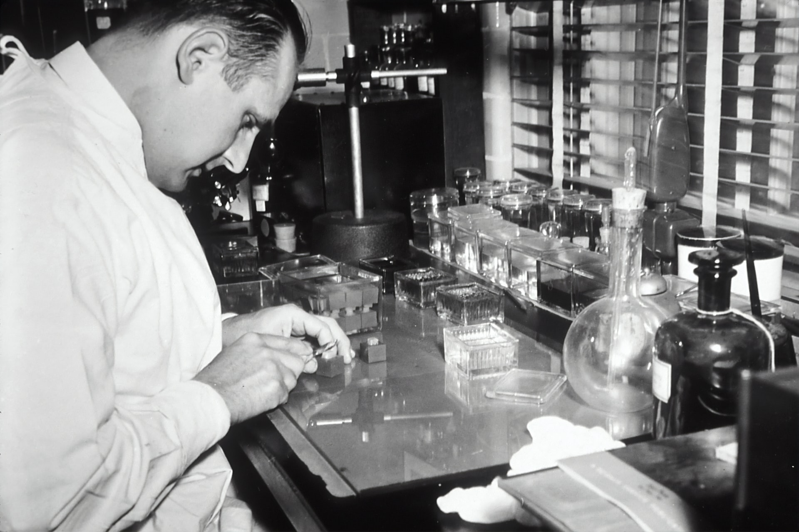
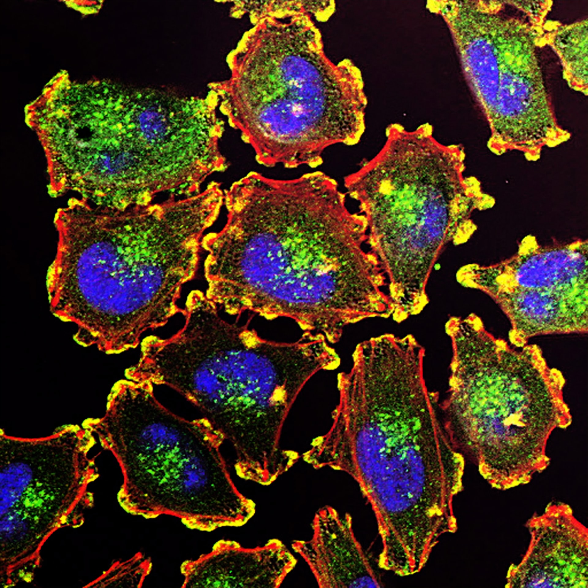
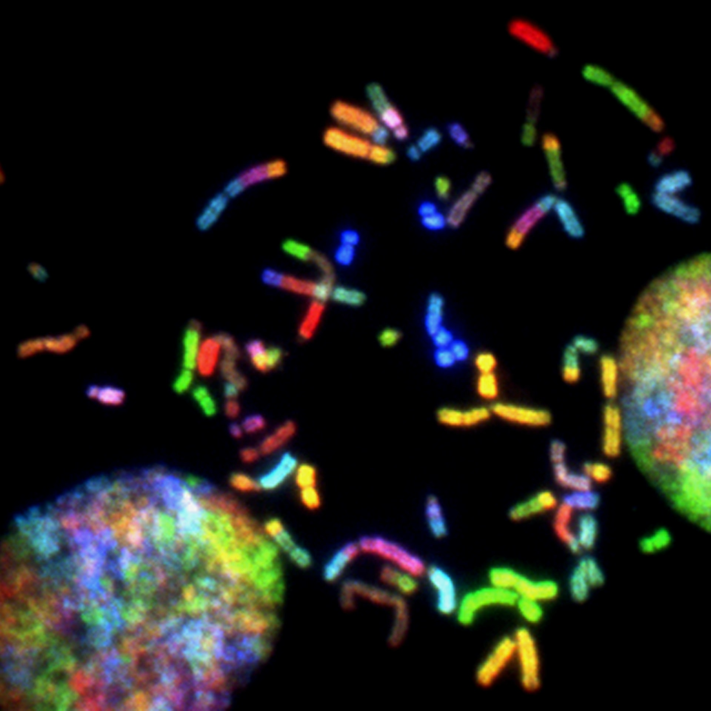
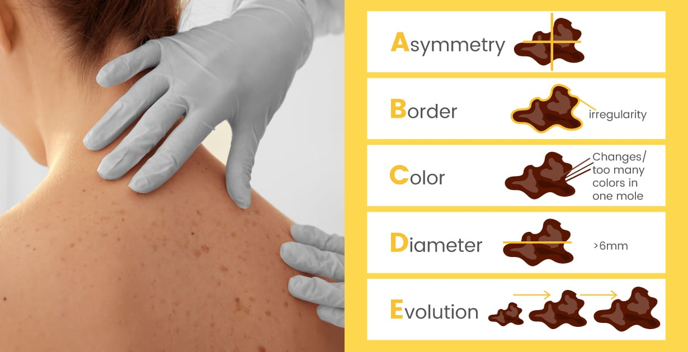
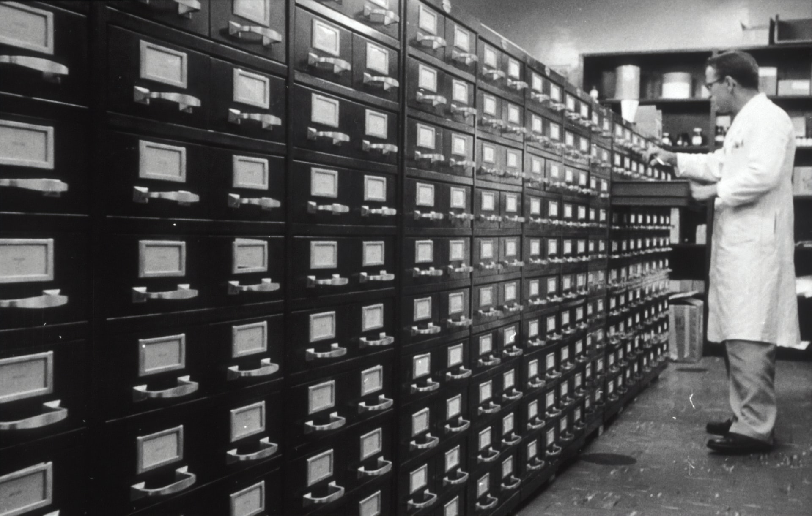
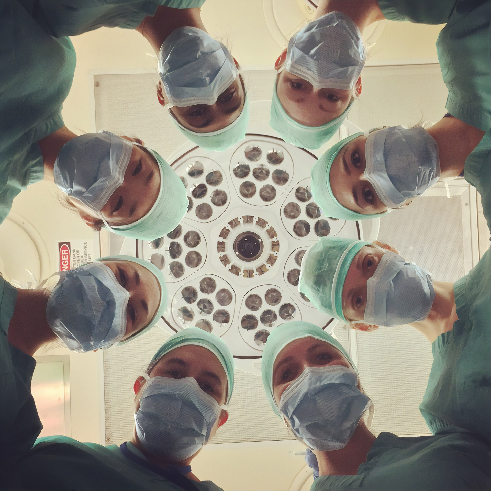

Cancer | AI
According to the World Health Organization (WHO), cancer is the second cause of death worldwide, with over 10 million deaths in 2020, or one in six deaths. Common cancer types have cure rates that can be higher when detected early and treated with the current best practices. Early detection can reduce mortality if the cases are detected and treated early. Screening programmes aim to identify patients with certain discrepancies suggestive of specific cancer or pre-cancer without developing any symptoms. These programmes are far more complex public health interventions than early diagnosis while being the most critical step in preventing cancer development.
In the last decades, advances in technology have provided the collection and availability of considerable amounts of clinical data on cancer in the medical community. Most of the predictions and screening are made based on medical expertise and statistical modelling.
Machine Learning (ML) has been used in cancer diagnosis, detection, and more recently in prognosis and prediction, as new ML and Artificial Intelligence (AI) models have been developed.
In this post, we will look at ML models that are being used to help the medical community and patients in the earlier detection and prognosis of cancer disease.
Cancer statistics
 A Technician preparing tissue to be stained and studied histologically in a laboratory (1950). Photo by National Cancer Institute on Unsplash
According to experts in Cancer Biology:
“Cancer is the end result of a process of accumulation of genetic and epigenetic alterations. A small fraction of these alterations is inherited and the remainder is due to either random errors made during DNA replication or to environmental factors” .
WHO describes cancer as:
“A large group of diseases that can start in almost any organ or tissue of the body when abnormal cells grow uncontrollably, going beyond their usual boundaries to invade adjoining parts of the body and/or spread to other organs”.
The latter process corresponds to metastasizing.
 Metastatic Melanoma Cells. The ability of cancer cells to move and spread depends on actin-rich core structures such as the podosomes (yellow) shown here in melanoma cells. Photo by National Cancer Institute on Unsplash
The International Agency for Research on Cancer, published data from the Globocan with the number of new cancers and corresponding deaths that occurred in 2020. The most common cancers and associated deaths were:
- Lung (2.21 million cases/ 1.80 million deaths)
- Breast (2.26 million cases/ 685 000 deaths)
- Colon and rectum (1.93 million cases/ 935 000 deaths)
- Prostate (1.41 million cases/ 358 989 deaths (2018))
- Skin cancer (non-melanoma) (1.20 million cases/ 65 155 deaths(2018))
- Stomach (1.09 million cases/ 769 000 deaths)
- Liver (840 000 cases(2018)/ 830 000 deaths)
Based on age, gender, cancer location, and implication, a detailed view of cancer statistics is also presented on the following chart.

We can see that the most common cancer in 2018 was lung cancer, while liver cancer was the deadliest in terms of annual new cases and deaths, followed by lung and stomach cancer deaths, with a majority of cases being males. Non-melanoma skin cancer is highly prevalent, with over a million cases per year, although annual deaths in 2018 were around 6% of the cases.
Early detection
The WHO indicates two components for early detection:
-
Early diagnosis: cancer is more likely to respond to effective treatment and can result in a greater probability of surviving, less morbidity, and less expensive treatment. Programmes can be designed to reduce delays in, and barriers to, care, allowing patients to access treatment in a timely manner.
-
Screening: Screening aims to identify individuals with abnormalities suggestive of a specific cancer or pre-cancer who have not developed any symptoms and refer them promptly for diagnosis and treatment. In general, a screening programme is a far more complex public health intervention compared to early diagnosis.
Examples of screening methods are:
- Visual Inspection with Acetic Acid (VIA) for cervical cancer in low-income settings;
- HPV testing for cervical cancer;
- PAP cytology test for cervical cancer in middle- and high-income settings; and
- mammography screening for breast cancer in settings with strong or relatively strong health systems.
Treatment
Having a correct cancer diagnosis is the first step for adequate and effective treatment since every type of cancer needs specific care. The treatment regimen may involve one or more modalities, including surgery, radiotherapy, and chemotherapy.
The primary goal is to cure cancer or prolong the patient’s life, giving the best quality of life, which can be achieved with palliative care and psychological support.
Common cancer types, such as breast cancer, cervical cancer, oral cancer, and colorectal cancer, have high cure rates when detected early and treated according to best practices. Other types of cancer types, such as testicular seminoma and different types of leukaemia and lymphoma in children, also have high cure rates if appropriate treatment is provided, even when cancerous cells are present in other areas of the body.
Cancer vs. AI
 Brain Cancer Chromosomes. Chromosomes prepared from a malignant glioblastoma visualized by spectral karyotyping (SKY) reveal an enormous degree of chromosomal instability: a hallmark of cancer. Created by Thomas Ried, 2014. Photo by National Cancer Institute on Unsplash
The concepts of AI and ML are sometimes confusing, and the ML models are vast and cover many fields, going out of the scope of this article. To have a deeper understanding of the differences between these terms as well as the development of the ML process, you may visit the article “From Big and Weak to Small and Powerful: Artificial Intelligence”, where these concepts are further detailed.
In a broad view, ML is a subfield of AI, and Deep Learning (DL) is the subset of ML. DL is, in turn, composed of Artificial Neural Networks (ANN) with more than three fully connected hidden layers. ML models use various statistical, probabilistic and optimization techniques based on past examples to detect unexplained patterns from data sets that are large, noisy or complex. It is a technique that is suitable for medical applications, especially when involving genetic data.
Physicians have generally outperformed traditional models that use just a few predictor variables to predict life expectancy, achieving a 96–98% success rate for diagnosing cancer.
So, why use ML models to diagnose cancer or predict life expectancy?
Well, going back a decade, the better designed and validated studies reviewed by Cruz and Wishart (2007) showed “that machine learning methods could be used to substantially (15-25%) improve the accuracy of predicting cancer susceptibility, recurrence and mortality”. Furthermore, it was also helping “to improve our basic understanding of cancer development and progression”.
ML models have shown to slightly diagnose cancer or survival rates better than physicians and much better than traditional statistical models. They can do it on a fast, massive scale. Moreover, they can also predict cancer.
ML models applied in cancer
ML applications in cancer detection and diagnosis have been in use for three decades, using ANN and Decision Trees (DT). More recently, these techniques and other models, such as Bayesian Networks (BN) and Support Vector Machines (SVM), have been used to model the progression and treatment of cancerous conditions.
The importance of the use of ML is the capacity to detect key features from complex datasets. The best-validated studies show that ML methods can be used to considerably (15-25%) increase the accuracy of predicting cancer susceptibility, recurrence and mortality.
With the power of Convolutional Neural Networks (CNN), DL has been successfully used in computer vision applications, for instance, in face recognition and image classification. The use of DL in automatically and accurately detecting cancer from images such as stained tumour slides or radiology images allows pathologists and radiologists to be liberated from routine and repetitive task.
According to Bhinder et al. (2021), CNN models can be divided into two approaches:
- Using images from a large collection of natural objects to train the initial layers of the model and further use the disease-specific data to fine-tune the training parameters in the last layers;
- Using an autoencoder where the model learns background features from a subset of representative images and encodes a compressed representation of the basic features later used to initialize the CNN.
ML case: Skin Cancer
A study by the Stanford Artificial Intelligence Laboratory on skin cancer included the classification of skin lesions using a single CNN, trained end-to-end from images directly. Using only pixels and disease labels as inputs, about 130,000 images of skin lesions were used, representing over 2,000 different diseases. According to Esteva et al. (2017), the performance was tested against 21 board-certified dermatologists with two critical binary classification use cases: keratinocyte carcinomas vs. benign seborrheic keratoses (most common skin cancers); and malignant melanomas vs. benign nevi (deadliest skin cancers).
 The ABCDE of skin cancer image diagnosis. Photo by draxe.com
The results showed the CNN achieved level-performance with all tested experts across both tasks. This study critically proved that artificial intelligence is capable of classifying skin cancer with the same ability as dermatologists. Furthermore, this study also showed that if Deep Neural Networks (DNN) like CNN are used in applications for mobile devices, early detection can be improved for skin cancer, extending the work of dermatologists outside of the clinic. Applications for skin cancer detection in mobile devices have since been developed, namely MoleMapper and SkinVision.
In a broader view, current AI applications to fight cancer include:
- Detection and classification of cancer;
- Molecular characterization of tumours and their microenvironment;
- Drug discovery and repurposing; and
- Predicting treatment outcomes for patients.
Bhinder et al. (2021) believe that “as these advances start penetrating the clinic, we foresee a shifting paradigm in cancer care becoming strongly driven by AI.”
Barriers
 A scientist working in the chemical library of Lederle Laboratory where 50,000 chemicals were tested annually for anti-tumor activity (1961) Photo by National Cancer Institute on Unsplash
Though the increase of computational technology and digital imaging, there are still foundational barriers to ML in cancer research and application and overall in clinical decision support. These limitations and obstacles include:
- Limited data access;
- Low-quality data;
- Poor technology integration;
- Lack of provider education and training; and
- Lack of team specialized professionals
Tackling these challenges will lead to more informed decision-making and better patient care. According to Kent (2020), healthcare and the adoption of AI has met some resistance by providers, “partly due to valid concerns over the ethical implications of using these tools to deliver care.” However, recent studies show that the younger generation is more than 70% confident that digital health technologies can achieve better patient outcomes and believe these tools will improve the patient experience. Moreover, these “providers will likely be well-equipped to understand and apply these tools in regular care delivery”, since "it’s not just computer scientists and data scientists who are interested, but also a lot of our clinical trainees.”
It is conceivable that ML and AI-supported clinical decision tools may well become the healthcare industry’s standard, and healthcare become automated much like other industries have.
Closing thoughts
 Cancer surgeons. Photo by National Cancer Institute on Unsplash
In this post, we looked at ML models that are being used to help the medical community and patients in the earlier detection and prognosis of cancer disease. These are the major takeouts about the use of AI in the fight of cancer:
-
Advances in technology in the last decades have provided the collection and availability of considerable amounts of clinical data on cancer in the medical community. Most of the predictions and screening are made based on medical expertise and statistical modelling.
-
ML has been used in cancer diagnosis, detection, and more recently in prognosis and prediction, as new ML models have been developed and computational technology has increased.
-
The importance of the use of ML is the capacity to detect key features from complex datasets. The best-validated studies show that ML methods can be used to considerably (15-25%) increase the accuracy of predicting cancer susceptibility, recurrence and mortality.
-
More recently, ANN and Decision Trees (DT) and other models, such as Bayesian Networks (BN) and Support Vector Machines (SVM), have been used to model the progression and treatment of cancerous conditions. With the power of Convolutional Neural Networks (CNN), DL has been successfully used in computer vision applications, for instance, in image classification.
-
In the ML case of skin cancer, a documented CNN model achieved level-performance with all tested experts, proving that AI is capable of classifying skin cancer with the same ability as dermatologists. Applications for skin cancer detection in mobile devices have since been developed, namely MoleMapper and SkinVision.
-
The application of AI in cancer research and application is present in all the cycle of the process, from early diagnosis to predicting treatment outcomes for patients.
-
The major barriers are related to the amount and quality of the data, as well as the lack of knowledge and integration of the medical teams in the AI field. Tackling these challenges will lead to more informed decision-making and better patient care.
Specialists in the cancer decision support tools believe it is conceivable that ML and AI-supported clinical decision tools may well become the healthcare industry’s standard, and healthcare become automated much like other industries have, in the near future.
References
Applications of machine learning in cancer prediction and prognosis, Cruz, J. A., & Wishart, D. S. Cancer informatics, 2, 59–77, 2007
Artificial Intelligence in Cancer Research and Precision Medicine, Bhinder, B., Gilvary. C., Madhukar, NS and Elemento O., Cancer Discov (11) (4) 900-915, April 1, 2021
Automated model versus treating physician for predicting survival time of patients with metastatic cancer, Gensheimer, M. F., Aggarwal, S., Benson, K.R.K, Carter, J. N., Henry, A.S, Wood et al., J. Am. Med. Inform. Assoc., ocaa290, 2020
Cancer, World Health Organization (WHO), March 3, 2021
Cancer Overview, World Health Organization (WHO), April 28, 2021
Dermatologist-level classification of skin cancer with deep neural networks, Esteva, A., Kuprel, B., Novoa, R. et al.. Nature 542, 115–118, January 24, 2017
How Machine Learning is Transforming Clinical Decision Support Tools, Kent, J., March 26, 2020
Machine Learning Is The Future Of Cancer Prediction, Sohail Sayed, December 8, 2018
MoleMapper, https://molemapper.org/, April 28, 2021
Non-melanoma skin cancer, Globoca, International Agency for Research on Cancer – WHO, 2020
SkinVision, https://www.skinvision.com/, April 28, 2021
Supervised mutational signatures for obesity and other tissue-specific etiological factors in cancer, Bahman, A., Albert K., YiFan, Z., Lu, L., Kamel, L., Ludmila D. et al., Cancer Biology, eLife 2021;10:e61082, 2021
Thumbnail: Enabling Novel X-ray Sources to Deliver Tumor-Killing Radiation Photo by National Cancer Institute on Unsplash